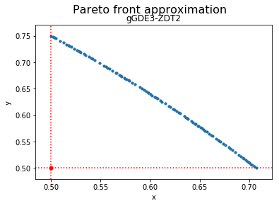

Preference point-based GDE3¶
Example¶
[1]:
from jmetal.algorithm.multiobjective.gde3 import GDE3
from jmetal.problem import ZDT2
from jmetal.util.comparator import GDominanceComparator
from jmetal.util.termination_criterion import StoppingByEvaluations
problem = ZDT2()
max_evaluations = 25000
reference_point = [.5, .5]
algorithm = GDE3(
problem=problem,
population_size=100,
cr=0.5,
f=0.5,
termination_criterion=StoppingByEvaluations(max=max_evaluations),
dominance_comparator=GDominanceComparator(reference_point)
)
algorithm.run()
solutions = algorithm.get_result()
We can now visualize the Pareto front approximation:
[3]:
from jmetal.lab.visualization.plotting import Plot
from jmetal.util.solution import get_non_dominated_solutions
front = get_non_dominated_solutions(solutions)
plot_front = Plot(plot_title='Pareto front approximation', axis_labels=['x', 'y'], reference_point=reference_point)
plot_front.plot(front, label='gGDE3-ZDT2')
